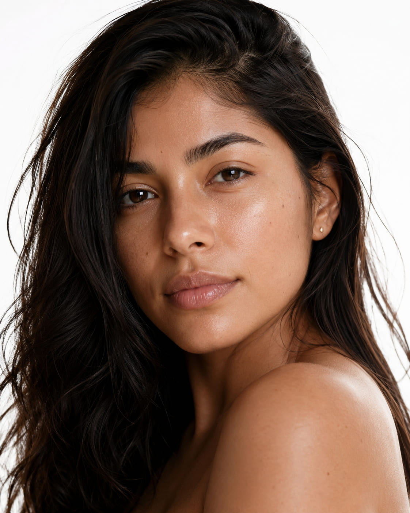

Skin Tightening & Lifting · Microneedling with PRFTensado y Lifting de Piel · Microagujas con PRF
Microneedling with
The OLAM GLOW.
Microagujas con
El OLAM GLOW.
Microneedling with PRF Therapy is a revolutionary technology developed to rejuvenate your skin in a totally natural and holistic way — combining the power of microneedling with your own platelet-rich fibrin for deeper, longer-lasting results. La Terapia de Microagujas con PRF es una tecnología revolucionaria desarrollada para rejuvenecer tu piel de forma totalmente natural y holística — combinando el poder del microagujamiento con tu propia fibrina rica en plaquetas para resultados más profundos y duraderos.

Microneedling with the OLAM GLOWMicroagujas con el OLAM GLOW
Treating beauty
for any age.
Tratando la belleza
a cualquier edad.
Microneedling with PRF is a procedure that involves withdrawing a patient's blood, processing it to isolate the platelet-rich fibrin (PRF), in some cases re-injecting it to erase wrinkles and create a more youthful look. Las Microagujas con PRF es un procedimiento que implica extraer sangre del paciente, procesarla para aislar la fibrina rica en plaquetas (PRF) y, en algunos casos, reinyectarla para borrar arrugas y crear un aspecto más juvenil.
PRF is found in your blood and is rich in growth factors and other substances that promote healing and cell regeneration. El PRF se encuentra en tu sangre y es rico en factores de crecimiento y otras sustancias que promueven la curación y la regeneración celular.
Microneedling with PRP/PRF is a simple, out-patient procedure which means you can go home after your procedure is completed without requiring an overnight stay at the clinic. Las Microagujas con PRP/PRF es un procedimiento ambulatorio sencillo, lo que significa que puedes ir a casa después de que se complete el procedimiento sin necesidad de pasar la noche en la clínica.
Book a consultationAgenda una consulta →What is the treatment procedure like?¿Cómo es el procedimiento de tratamiento?
How does the
OLAM GLOW work?
¿Cómo funciona
el OLAM GLOW?
Numbing & Blood DrawAnestesia y Extracción de Sangre
First, your medical provider will apply numbing cream in the area to be treated. Then, about 13 to 52 cc of blood is drawn from your arm, and the blood is centrifuged so as to separate the platelet-rich plasma. Primero, tu proveedor médico aplicará crema anestésica en el área a tratar. Luego, se extraen aproximadamente de 13 a 52 cc de sangre de tu brazo, y la sangre se centrifuga para separar el plasma rico en plaquetas.
PRF ProcessingProcesamiento del PRF
PRP works because the plasma and platelets are the components of blood that are full of growth factors. These growth factors stimulate the production of new collagen and elastin when reintroduced into the skin via microneedling. El PRP funciona porque el plasma y las plaquetas son los componentes de la sangre llenos de factores de crecimiento. Estos factores de crecimiento estimulan la producción de nuevo colágeno y elastina cuando se reintroducen en la piel mediante microagujas.
Microneedling with PRFMicroagujas con PRF
The PRF is applied to the skin during the microneedling process, allowing the growth factors to penetrate deep into the dermis through the micro-channels created by the needles. This dual-action approach accelerates healing and amplifies results significantly beyond what either treatment achieves alone. El PRF se aplica a la piel durante el proceso de microagujamiento, permitiendo que los factores de crecimiento penetren profundamente en la dermis a través de los microcanales creados por las agujas. Este enfoque de doble acción acelera la curación y amplifica los resultados significativamente más allá de lo que logra cada tratamiento por separado.
Benefits of OLAM GLOWBeneficios del OLAM GLOW
What it does
for your skin.
Lo que hace
por tu piel.
Who is an ideal candidate for OLAM GLOW?¿Quién es una candidata ideal para el OLAM GLOW?
An artistic approach
at Olam Med Spa.
Un enfoque artístico
en Olam Med Spa.
If you identify with the following, you may be an ideal candidate for OLAM GLOW: Si te identificas con lo siguiente, puedes ser una candidata ideal para el OLAM GLOW:
Common questionsPreguntas frecuentes
Everything you need
to know.
Todo lo que necesitas
saber.
repeatHow many treatments do I need?¿Cuántos tratamientos necesito?
The number of procedures needed depends on each individual patient, the patient's desired results, and the individual treatment plan. As a standalone therapy, it is usually recommended to have a series of 3 treatment sessions performed from 4 to 5 weeks apart for best results. For deeper wrinkles or other age signs, 6 to 8 treatments may be necessary to achieve optimal results. El número de procedimientos necesarios depende de cada paciente individual, los resultados deseados y el plan de tratamiento individual. Como terapia independiente, generalmente se recomienda tener una serie de 3 sesiones de tratamiento realizadas con 4 a 5 semanas de diferencia para mejores resultados. Para arrugas más profundas u otros signos de envejecimiento, pueden ser necesarios de 6 a 8 tratamientos para lograr resultados óptimos.
healingWhat to expect post-procedure?¿Qué esperar después del procedimiento?
Right after your microneedling with PRP/PRF procedure, you will find that your skin appears slightly pink or red. This is completely natural and should not be a cause for alarm. There is very little downtime involved with minimal discomfort, which is why this procedure is a great option for many people. Justo después de tu procedimiento de microagujas con PRP/PRF, notarás que tu piel aparece ligeramente rosada o roja. Esto es completamente natural y no debe ser motivo de alarma. Hay muy poco tiempo de recuperación con mínimas molestias, por lo que este procedimiento es una gran opción para muchas personas.
What clients sayQué dicen nuestras clientas
400+ five-star reviews.400+ reseñas de cinco estrellas.
Natural. Holistic. Transformative.Natural. Holístico. Transformador.
Your own biology —
working for you.
Tu propia biología —
trabajando para ti.
The OLAM GLOW harnesses the regenerative power already inside you. By combining PRF from your own blood with precision microneedling, we amplify your skin's natural healing response for results that are deeper, longer-lasting, and completely natural. El OLAM GLOW aprovecha el poder regenerativo que ya está dentro de ti. Al combinar el PRF de tu propia sangre con microagujas de precisión, amplificamos la respuesta natural de curación de tu piel para obtener resultados más profundos, duraderos y completamente naturales.
Book a consultationAgenda una consulta →Why choose Olam Med SpaPor qué elegir Olam Med Spa
Expert care. Every time. Atención experta. Siempre.
Your Own Biology as MedicineTu Propia Biología como Medicina
PRF is derived from your own blood — no synthetic chemicals, no foreign substances. The OLAM GLOW uses your body's own growth factors to stimulate collagen and heal skin from within. El PRF se deriva de tu propia sangre — sin químicos sintéticos, sin sustancias extrañas. El OLAM GLOW usa los factores de crecimiento de tu propio cuerpo para estimular el colágeno y sanar la piel desde adentro.
Personalized Treatment PlansPlanes de Tratamiento Personalizados
We assess your unique skin concerns and goals to design the right number of sessions and spacing — whether that's a series of 3 or up to 8 treatments for deeper age signs. Evaluamos tus preocupaciones y metas únicas de piel para diseñar el número correcto de sesiones y la frecuencia adecuada — ya sea una serie de 3 o hasta 8 tratamientos para signos de envejecimiento más profundos.
Minimal Downtime, Maximum GlowMínima Recuperación, Máximo Brillo
Right after the procedure your skin may appear slightly pink — this fades quickly. With very little downtime and minimal discomfort, you can fit OLAM GLOW into your lifestyle without missing a beat. Justo después del procedimiento, tu piel puede aparecer ligeramente rosada — esto desaparece rápidamente. Con muy poco tiempo de recuperación y mínimas molestias, puedes incorporar el OLAM GLOW a tu estilo de vida sin perder el ritmo.
Ready for your OLAM GLOW?¿Lista para tu OLAM GLOW?
Book your Advanced Microneedling consultation at Olam Med Spa in Pembroke Pines today.Agenda tu consulta de Microagujas Avanzado en Olam Med Spa en Pembroke Pines hoy.